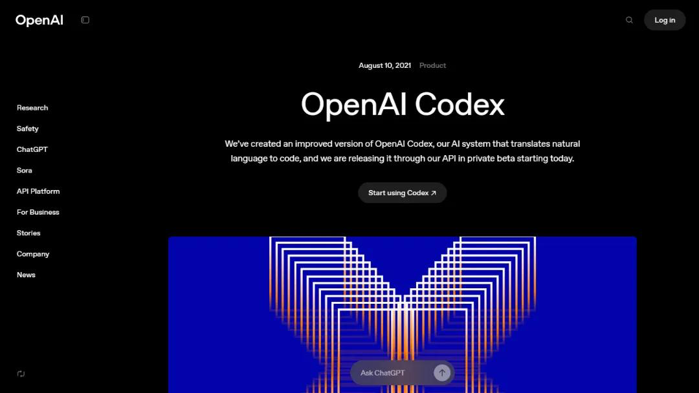
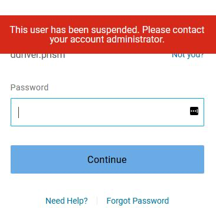
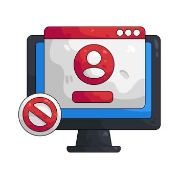
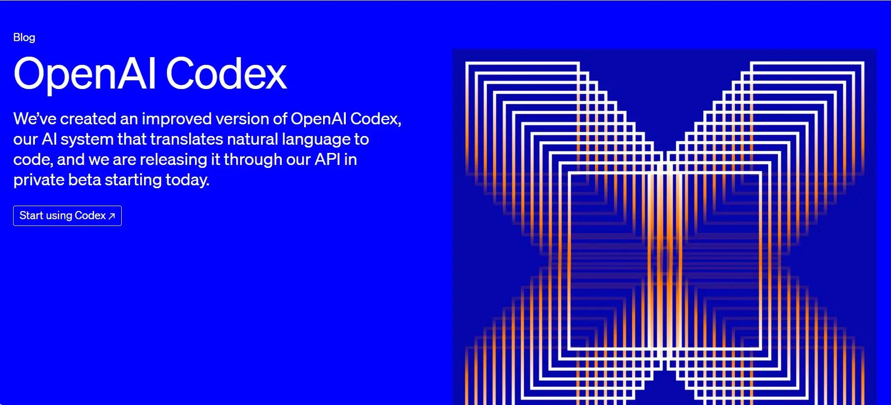

昨天，很多人还在问：Codex 是不是开始大规模封号了？
今天，剧情直接反转。
根据公开传播的 OpenAI 官方说明，这次风波里，确实有一部分账号不是“正常封禁”，而是被系统错误暂停了。
官方的说法很直接：一次问题导致部分用户账号被错误停用，团队正在恢复访问权限，并处理相关订阅与 credits 问题，同时对由此带来的不便表示抱歉[1][1]。
这句话一出来，整件事的性质就变了。
它不再只是“Codex 风控升级”，而是变成了：风控升级背景下，平台出现了一次大规模误伤。
💡 如果只看一句话版： 这次不是单纯“用户违规被封”，而是 OpenAI 亲口承认：部分账号被错封了，而且正在恢复，还公开道歉了[1][1]。
因为在官方回应之前，所有用户看到的，几乎都是“封号现场”。
从 LINUX DO、V2EX 到 OpenAI Developer Community，反馈非常集中：

再叠加前几天 Codex 配额收紧、重置周期变化、双倍额度权益结束这些消息，大家几乎本能地得出同一个结论：
OpenAI 开始对 Codex 下狠手了。[3][3]
所以你会发现，这次舆论发酵得特别快。
因为它戳中的不是“某个产品不好用”，而是开发者最怕的那种感觉：
我把工作流搭起来了，结果账号突然没了。
更准确的说法应该是：
这两个判断，不冲突，反而应该放在一起看。
也就是说：
风控升级是真的。系统误封也是真的。
这才是这次事件最接近事实的版本。
这点非常关键。
如果只是正常的违规封禁，平台通常不会公开说“部分账号被错误暂停”。既然官方已经这么表述，就说明这次异常里，至少有一部分责任在平台侧[1][1]。
这对用户情绪的影响很大。
因为过去最难受的地方就在于：
你不知道自己到底是真的踩线了，还是单纯被系统误判了。
这和普通的封号逻辑不一样。
普通情况下，平台往往只给你一个 appeal 入口，剩下全靠你自己解释。
但这次 OpenAI 的口径是：正在恢复访问权限，并处理相关订阅与 credits 问题[1][1]。
这意味着，它更像是一场平台侧批量修复，而不只是零散个案处理。
对普通围观者来说，大家讨论的是“有没有封号”。
但对重度开发者来说，真正可怕的问题其实是：
如果系统会误封，那我还能不能放心把工作流押在上面？
因为现在很多人已经把 Codex 接进了日常开发：写代码、改脚本、跑 review、做自动化。一旦账号突然掉线，断掉的不是一个网页，而是整段工作节奏[4][4]。
我觉得最适合传播的一句话是：
这不是一次单纯的“Codex 大封号”，而是一次“风控升级背景下的大规模误封”。
这个说法更稳，也更接近现在已经公开的信息。
因为 OpenAI 帮助中心本来就写得很清楚：账号被停用，不只可能因为违规内容，也可能和安全风险、未经授权访问、反复违规、身份验证未完成有关[5][5]。
所以最近账号体系变严，这件事大概率仍然成立。
只是这次，平台自己也承认：收紧的过程中，确实错杀了一批人。[1][1]

⭐ 别因为官方开始恢复了，就以为这件事已经彻底过去了。
如果你还在高频使用 Codex，我建议立刻做 4 件事：

这次 Codex 风波，最值得被记住的，不是“OpenAI 封没封号”，而是这句更扎心的话：
当 AI 工具真的进入生产流程以后，一次误判，影响的已经不是情绪，而是工作。
所以今天这件事的真正反转，不只是“官方出来道歉了”，而是它至少证明了一点：
不是所有被封的人都有问题。
有些人，真的只是被系统错杀了。
[1] [1]: https://digg.com/ai/gw50y6lj
[2] [2]: https://linux.do/t/topic/2291495
[3] [3]: http://news.qq.com/rain/a/20260603A04CBJ00
[4] [4]: http://m.toutiao.com/group/7647842182912672310/
[5] [5]: https://help.openai.com/zh-hans-cn/articles/10562188-why-was-my-openai-account-deactivated
[6] [6]: https://linux.do/t/topic/2283110